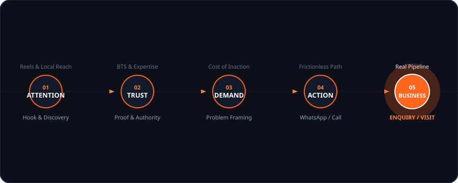

One System.
Multiple Moving Parts.
Random posts fail because they lack foundational engineering. Here is the exact 8-stage architecture AIS deploys around your local business.
First Principles Conversion Cascade

The 8 Pillars of the AIS System
Everything needed to turn passive scrollers into confirmed appointments.
Positioning & Market Stance
Before creating content, we answer: Who is the customer? What problem do they have? Why should they trust you? What makes you different?
Deliverables:
Content Strategy & Jobs
Every post has a designated conversion job. We map weekly themes balancing Education, Proof, Behind the Scenes, and Offers.
Deliverables:
Creative Production
Script, Hook, Visual Direction, Captions, and CTA. Reels, multi-slide carousels, static graphics, and stories.
Deliverables:
Distribution
Reaching the right local audience consistently across Instagram, Facebook, Google Business Profile, and YouTube Shorts.
Deliverables:
Lead Capture Pathways
Attention is not the finish line. We engineer frictionless conversion pathways from bio links into WhatsApp, calls, or landing pages.
Deliverables:
Follow-Up Handoff
A lead is not automatically a customer. We supply your front desk with qualification frameworks to turn inquiries into closed appointments.
Deliverables:
Analysis & Reporting
Evaluating profile visits, bio clicks, save rates, and genuine inbound inquiries with zero fabricated numbers.
Deliverables:
Iterative Optimization
Formulating new content hypotheses, testing hook variations, and refining editorial angles for compounding long-term growth.
Deliverables:
"What Should People Feel When They See Your Brand?"
We use consistent visuals, messaging, proof, and content to shape a clear, genuine brand perception. Zero manipulation. Zero manufactured credibility.
Professional
Clean typography, high-contrast layouts, and disciplined aesthetics over chaotic neon graphics.
Active & Reliable
Predictable weekly publishing and updated story highlights demonstrating active operations.
Knowledgeable
Content that explains the clinical/technical 'why' rather than generic copied quotes.
Trustworthy
Real footage of your facilities, practitioners, and verified outcomes instead of fake stock models.
Relevant
Content addressing local community landmarks, regional seasons, and neighborhood concerns.
Easy to Contact
Prominently displayed WhatsApp and direct phone links with low-friction response expectations.
The Monthly Content Engine
*Illustrative rhythm example. Configured around your package & capacity.
Attention & Problem
Hook local scrollers with relatable everyday friction points and demonstrate clinical/technical mastery.
Authority & Humans
Humanize your brand with team and facility walkthroughs while answering the most common hesitations.
Proof & Demand
Highlight real client transformations and frame why delaying a decision costs more than acting now.
Direct Action
Guide warm viewers towards one-tap WhatsApp bookings, direct calls, or physical showroom visits.
Ready to Put This System to Work?
Book a 30-minute diagnostic session to discuss how the 8-stage architecture applies to your local trade area.